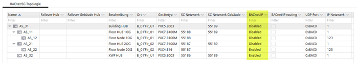
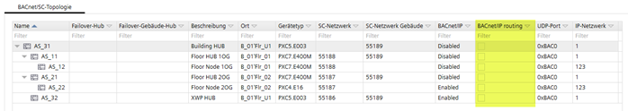

Affect of enabling BACnet/IP and BACnet/IP routing
Enabling BACnet/IP
启用 BACnet/IP 渲染设备及其 BACnet 对象在 BACnet/IP. 上可见 换句话说，BACnet/SC 设备在 BACnet/IP 上设置为启用，并且其对象在 BACnet/IP 上可见，并且无论设备是否配置为 BACnet/SC 集线器或BACnet/SC 节点。此过程可以使 BACnet/SC 网络中的各个设备在 BACnet/IP. 上可见

Enabling BACnet/IP routing
BACnet/IP must be enabled on the device to enable BACnet/IP routing. BACnet/IP can be enabled on both the BACnet/SC hub or a BACnet/SC node.
- Enabling BACnet/IP routing on a BACnet/SC node
Only the corresponding device is visible on BACnet/IP. The device and its BACnet objects are mapped to BACnet/IP. - Enabling BACnet/IP routing on a BACnet/SC hub
All devices within the cascading scope are visible. The BACnet/SC hub as well as it BACnet objects are mapped to BACnet/IP. All BACnet/SC nodes assigned to the BACnet/SC hub are visible (with the BACnet objects) on BACnet/IP.

Only one BACnet/SC device can operate as BACnet/IP router on an IP subnetwork.
